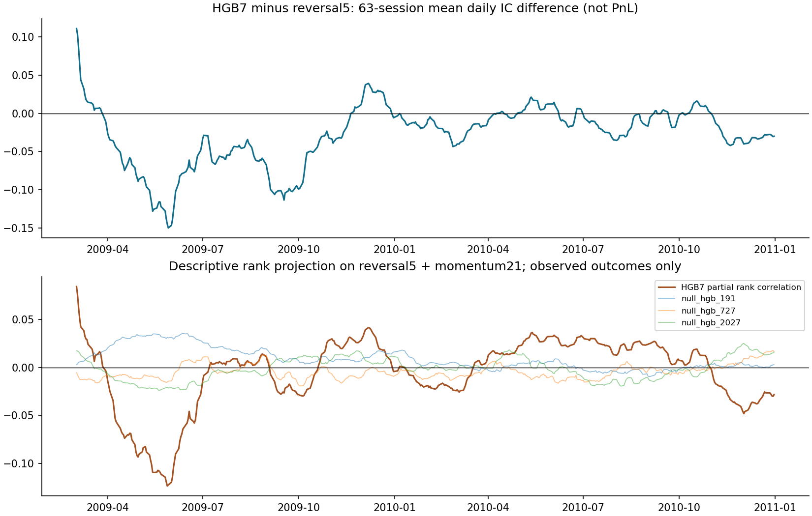

Paired HGB7 minus reversal5 daily IC: -0.02564, 95% 20-session calendar-block interval [-0.05577, 0.00346].
HGB7 partial rank correlation after linear projection of both score and outcome ranks on reversal5 and momentum21: -0.00407, interval [-0.03093, 0.02092]. This is an observed-case descriptive statistic, not a tradable residual signal or general conditional-independence test.
| Condition | Forecast rows | HGB7 − reversal5 IC [95% interval] | Partial rank correlation [95% interval] |
|---|---|---|---|
| all | 820,028 | -0.02564 [-0.05577, 0.00346] | -0.00407 [-0.03093, 0.02092] |
| low_liquidity | 410,139 | -0.02691 [-0.05640, 0.00193] | -0.00625 [-0.03362, 0.01865] |
| high_liquidity | 409,889 | -0.02244 [-0.05538, 0.00755] | 0.00003 [-0.02738, 0.02665] |
| low_volatility | 410,138 | -0.03277 [-0.05872, -0.00860] | -0.01854 [-0.04094, 0.00245] |
| high_volatility | 409,890 | -0.00587 [-0.03296, 0.02227] | 0.01014 [-0.01080, 0.02918] |
Liquidity and volatility groups use the full same-date forecast cohort before checking outcomes. They are relative cross-sectional conditions, not aggregate market regimes. Both years and all fixed 10/20/40-session block sensitivities are reported in summary.json; none is selected as the headline result.
| Original training-label control | Mean partial rank correlation | 95% interval |
|---|---|---|
| null_hgb_191 | 0.00801 | [0.00131, 0.01477] |
| null_hgb_727 | -0.00312 | [-0.01097, 0.00437] |
| null_hgb_2027 | -0.00023 | [-0.00868, 0.00776] |
These three controls are diagnostics, not a high-powered randomization test.

No combination weights, signs, features, subgroups or hyperparameters were searched. Outcome projection uses same-date observed returns for evaluation only; no coefficients or per-security residuals are exported. Missing outcomes remain in forecast denominators, and undefined partial correlations remain undefined. There is no PnL or trading-promotion gate.
Input/protocol/runtime bindings · Analysis protocol · All aggregate daily diagnostics